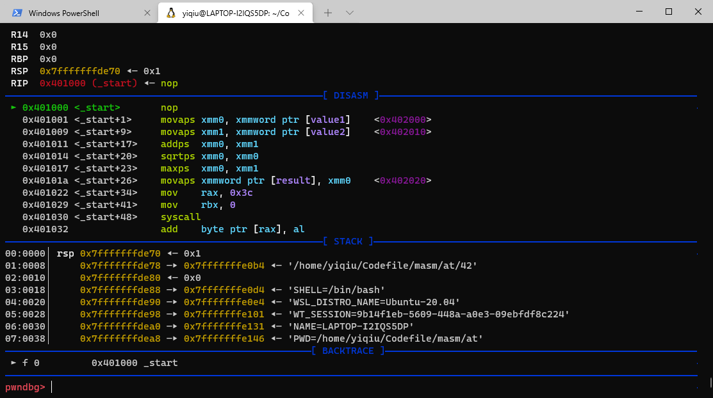
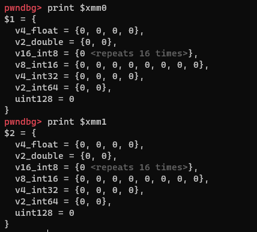
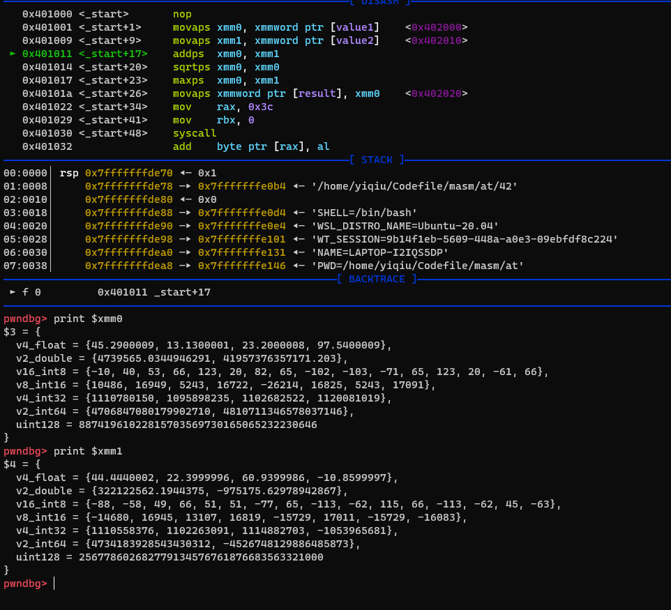
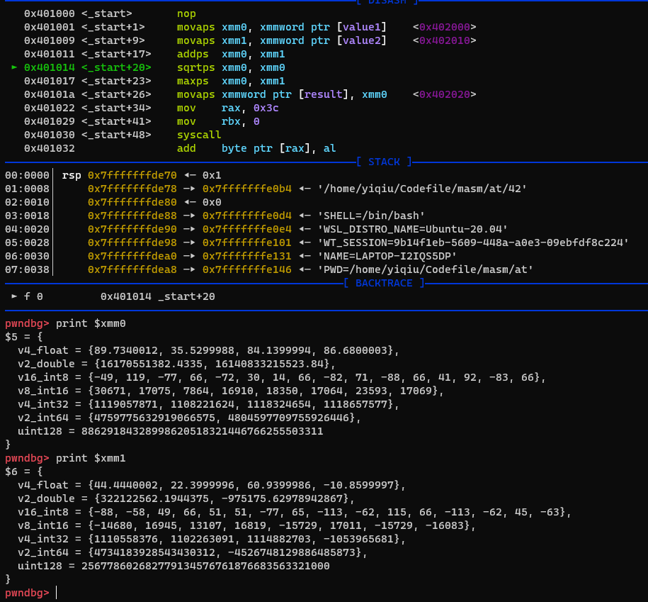

前言
早几天看CSAPP的时候，接触到一个“单指令多数据并行”的概念，那个时候还不知道这是什么东西，没想到今天学汇编就学到了
实践
先看一个小的汇编程序：
1 | .section .data |
第二行的.align 16是在进行内存对齐，因为movaps指令要求操作数的内存与16对齐，否则会报段错误，以前写pwn题的时候还被这东西坑过，现在终于更进一步了解为什么需要对齐了
我们定义了两组数据：value1和value2，他们都包含四个float类型的浮点数
xmm0和xmm1是两个特殊的寄存器，他们的功能接下来会讲到
这些指令很眼熟，其实他们的功能和去掉ps差不多
下面汇编并链接这个程序，再使用gdb调试来仔细分析程序的行为
1 | as -o example.o example.s |

程序断在了nop，即text段的第一条指令处
1 | print $xmm0 |

我们打印xmm0和xmm1寄存器中的值，可以看到其中还都是零，接下来我们运行到addps指令处，再打印其中的值

由于浮点数无法精确地表示，所以这些值都是我们初始化值的近似值，可以看到：xmm0保存着value1的值，xmm1保存着value2的值
在这里，我们只使用一条指令就完成了四个值的传递，这就是单指令多数据并行的一种表现形式
下面继续执行addps指令，看看内存会发生什么变化

xmm0中保存了两个寄存器相加的值，相加的规则是对应位置相加，在这里，一条add指令就完成了四对数据的加法
再往后不需要调试也能推测一番了，aqrtps用于计算四个数各自的平方根，maxps用于选出操作数中较大的哪一个，接着movaps将其放入result内存中，然后程序就调用exit退出了
总结
这些后缀带ps的指令就是SSE指令，这些指令提供了对单精度浮点数的SIMD支持，SIMD就是“单指令多数据并行”
xmm寄存器相当于一个多数据包，将数据传入xmm寄存器可以看作是打包数据，打包后的数据是可以使用单一指令同时操作的，将数据从xmm寄存器传入内存可以看成是对数据包的解包
SSE指令远不止这几条，但是只要了解原理其他的都好说，有兴趣的可以自己去查阅相关资料